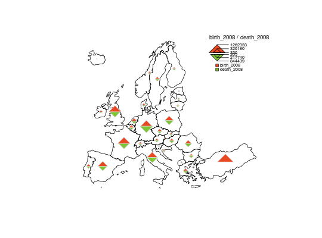
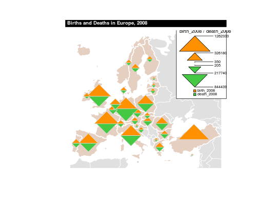

Plot a double proportional triangles layer.
propTrianglesLayer(spdf, df, spdfid = NULL, dfid = NULL, var1,
col1 = "#E84923", var2, col2 = "#7DC437", k = 0.02,
legend.pos = "topright", legend.title.txt = paste(var1, var2, sep =
" / "), legend.title.cex = 0.8, legend.var1.txt = var1,
legend.var2.txt = var2, legend.values.cex = 0.6, legend.values.rnd = 0,
legend.style = "c", legend.frame = FALSE, add = TRUE)
Arguments
- spdf
- a SpatialPointsDataFrame or a SpatialPolygonsDataFrame; if spdf
is a SpatialPolygonsDataFrame symbols are plotted on centroids.
- df
- a data frame that contains the values to plot. If df is missing
spdf@data is used instead.
- spdfid
- identifier field in spdf, default to the first column
of the spdf data frame. (optional)
- dfid
- identifier field in df, default to the first column
of df. (optional)
- var1
- name of the first numeric field in df to plot, positive values
only (top triangle).
- col1
- color of top triangles.
- var2
- name of the second numeric field in df to plot, positive values
only (bottom triangle).
- col2
- color of bottom triangles.
- k
- share of the map occupied by the biggest symbol.
- legend.pos
- position of the legend, one of "topleft", "top",
"topright", "left", "right", "bottomleft", "bottom", "bottomright". If
legend.pos is "n" then the legend is not plotted.
- legend.title.txt
- title of the legend.
- legend.title.cex
- size of the legend title.
- legend.var1.txt
- label of the top variable.
- legend.var2.txt
- label of the bottom variable.
- legend.values.cex
- size of the values in the legend.
- legend.values.rnd
- number of decimal places of the values
displayed in the legend.
- legend.style
- either "c" or "e". The legend has two display
styles, "c" stands for compact and "e" for extended.
- legend.frame
- boolean; whether to add a frame to the legend (TRUE) or
not (FALSE).
- add
- whether to add the layer to an existing plot (TRUE) or
not (FALSE).
See also
legendPropTriangles
Examples
data("nuts2006")
# Example 1
plot(nuts0.spdf)
# There is no data for deaths in Turkey
propTrianglesLayer(spdf = nuts0.spdf, df = nuts0.df,
var1 = "birth_2008",
var2 = "death_2008")
plot(countries.spdf,col="#E0E0E0",border="white",lwd=1, add=TRUE)
plot(nuts0.spdf,col="#E5CFC1",border="white",lwd=2,add=TRUE)
# There is no data for deaths in Turkey
propTrianglesLayer(spdf = nuts0.spdf, df = nuts0.df,
var1 = "birth_2008", legend.style = "e",
var2 = "death_2008", legend.frame = TRUE,
col1="#FF9100",col2="#45C945",k = 0.1, add=TRUE)
